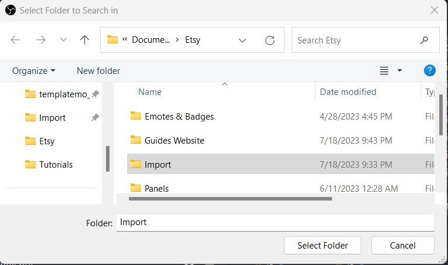

Having Trouble?
If you are having any trouble here is a video tutorial you can watch: How to Export/Import Profiles & Scenes in OBS Studio. It shows how to import a scene collection starting at 2:38.
This process involves importing a selection of scenes that include overlays, decorations, screens, and creative ideas on utilizing various elements within this package. This guide provides instructions on importing your OBS scenes as a starting point. It is important to note that these scenes serve as a foundation and do not encompass all the components included in your stream package. Take the time to thoroughly review all the items and files provided in the google drive link so you can fully customize your scenes!
Begin by downloading the scene collection import files from Google Drive. These files are contained within a zip file named "OBS-Import-Scenes.zip." Extract the contents of the zip file, which should include a JSON file and a folder containing all the necessary items for the import. It is important to choose a location on your computer where these files will remain permanently.
Open OBS Studio on your computer. This can usually be done by locating the application in your program list or by double-clicking on the desktop shortcut.
In OBS Studio, navigate to the top menu and click on "Scene Collection." From the dropdown menu, select "Import."
Click the "Add" button in the import dialog box. Locate the JSON file that you downloaded earlier, and select it. Then, click "Open" to proceed.
You will now see the JSON file listed in the import dialog box, click on the "Import" button.
Go to the "Scene Collection" menu, and you should see the imported collection named "Retro Lofi Scenes" listed. Click on "Retro Lofi Scenes" to select it.

You will need to tell OBS Studio where the downloaded files are located on your computer. A "Missing Files" popup should appear after you selected "Retro Lofi Scenes". Click on the "Search Directory" button.
Locate the folder named "Import" that was included with the downloaded JSON file. Select the folder.

Upon selecting the folder, OBS Studio will scan for the required files. You will notice that the state of the files changes to "Found" on the right side of the dialog box.

To finalize, click on the "Apply" button. All the necessary files should be in place! Congratulations! You have successfully imported the scene collection!
If you are having any trouble here is a video tutorial you can watch: How to Export/Import Profiles & Scenes in OBS Studio.
It shows how to import a scene collection starting at 2:38.
If you are having any trouble here is a video tutorial you can watch: How to Export/Import Profiles & Scenes in OBS Studio. It shows how to import a scene collection starting at 2:38.